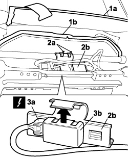

7045M32 ELECTRONIC THERMOSTAT FOR HEATING CIRCUIT OF ONE FRONT SEAT, LH OR RH R R
- Path
- Procedures > 70 FITTINGS > 7045 FRONT SEATS > 7045M FRONT SEAT HEATING > 7045M32 ELECTRONIC THERMOSTAT FOR HEATING CIRCUIT OF ONE FRONT SEAT, LH OR RH R R
- Kind
- repair procedure (removal / refitting; the operation number is the code)
- Applies to
- all engines; all production periods
- Interactive page
- https://sloeber94.github.io/elrnDB-fCrm/en/#/194001137
Applies to: all engines; all production periods
 Removing
Removing
 Refitting
Refitting- Open the front side door.
- Turn the ignition key to the OFF position.
- Disconnect the negative battery terminal.
Description | Connector | |
|---|---|---|
BATTERY |
Op. 7045A10 FRONT SEAT (ONE), LEFT OR RIGHT - R.R.
1. Release the retainers and lift up the backrest cover (1a), release the cushion cover (1b) from the seat frame.
2. Cut the retaining bands (2a) and release the support (2b) from the seat frame.
3. Disconnect the electrical connection for the electronic thermostat (3a) and remove the electronic regulator (3b) releasing it from the support as shown by the arrow.
Description | Connector | |
|---|---|---|
3a | DRIVER'S FRONT SEAT HEATER CONTROL UNIT | See M170 DRIVE SIDE FRONT PASSENGER SEAT HEATER CONTROL UNIT |
Description | Connector | |
|---|---|---|
3a | PASSENGER FRONT SEAT HEATER CONTROL UNIT |

Applies to: all engines; all production periods
Refitting
Removing- Check the operation of the electronic regulator.
- Fit the electronic thermostat on the mounting and connect the electrical connection.
Description | Connector | |
|---|---|---|
DRIVER'S FRONT SEAT HEATER CONTROL UNIT | See M170 DRIVE SIDE FRONT PASSENGER SEAT HEATER CONTROL UNIT |
Description | Connector | |
|---|---|---|
PASSENGER FRONT SEAT HEATER CONTROL UNIT |
- Fit the support on the seat frame and fit new retaining bands.
- Fit the cushion cover to the frame and attach the retainers for the backrest cover.
Op. 7045A10 FRONT SEAT (ONE), LEFT OR RIGHT - R.R.
- Connect the negative battery terminal.
Description | Connector | |
|---|---|---|
BATTERY |
Topics linked from this page (4)
- 7045A10 FRONT SEAT (ONE), LEFT OR RIGHT - R.R.
- A001 BATTERY
- M110 FRONT PASSENGER SEAT HEATER CONTROL UNIT
- M170 DRIVE SIDE FRONT PASSENGER SEAT HEATER CONTROL UNIT